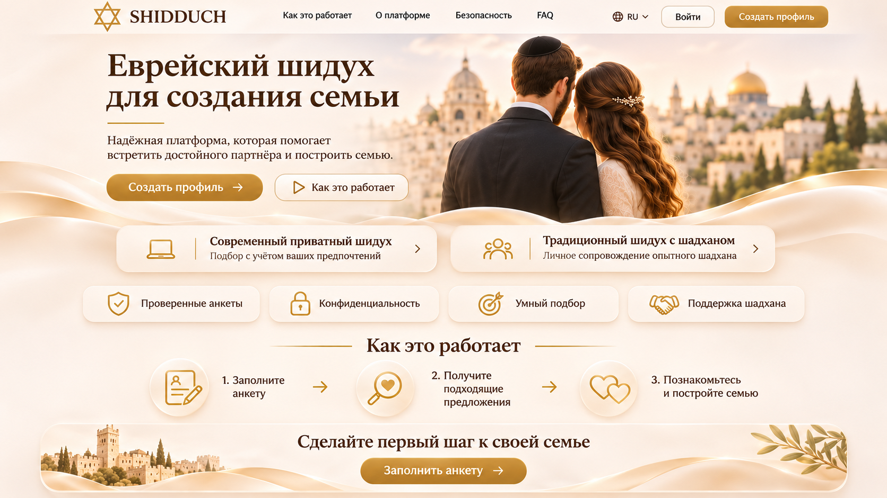
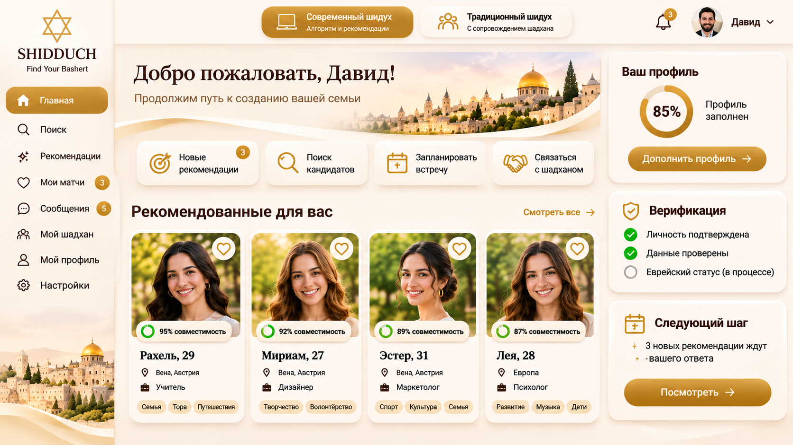
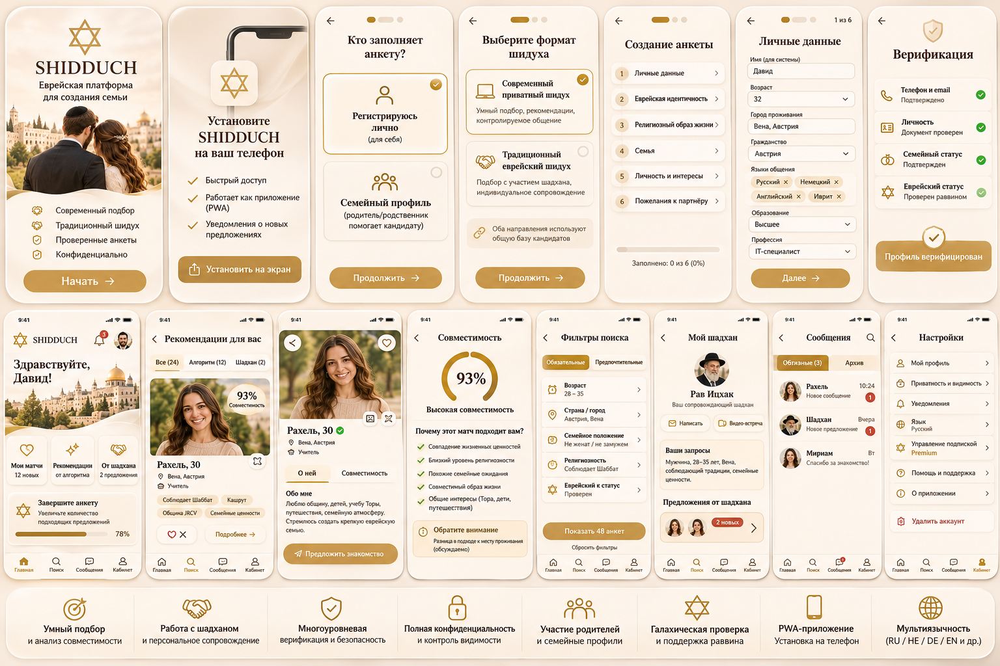
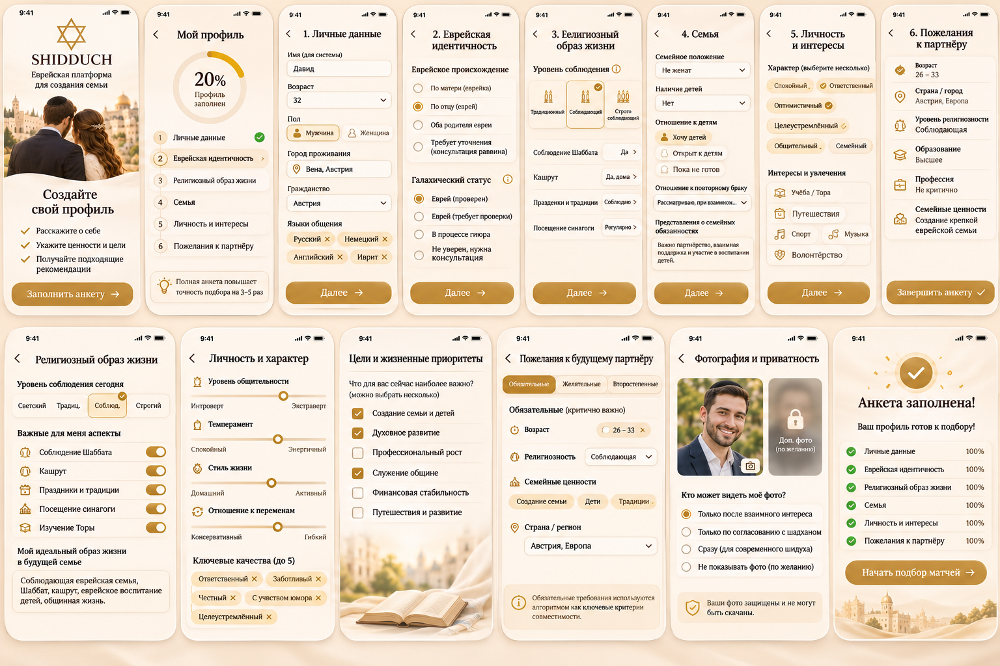

Единая технологическая платформа (Desktop Web + Mobile PWA), объединяющая алгоритмический анализ совместимости, защиту репутации общины и традиционный еврейский шидух с шадханом.

Главный принцип: не просто знакомство двух людей, а осознанный подбор пары с перспективой создания крепкой еврейской семьи.
Оба направления используют общую верифицированную базу кандидатов Вены, региона DACH и Израиля, позволяя гибко переключать режим сопровождения.
Легализация участия родителей и старших родственников (ашкеназские, бухарские, грузинские, горские семьи) через специальный режим «Семейный профиль».
Высокое доверие за счёт эгиды общины JRCV, участия раввинов при галахической проверке и интеграции с офлайн-жизнью еврейской Вены.
Анализ 5 ведущих мировых платформ позволил взять лучшие механики и устранить барьеры, из-за которых распадается 80% воронки.
| Платформа и категория | Механика работы | Сильные стороны (Что перенимаем) | Слабые места (Как улучшаем в SHIDDUCH) |
|---|---|---|---|
| SawYouAtSinai / Shidduch.im Классический шадханут |
Анкета видна только шадханам. Участник ждёт ручного подбора варианта. | Высокое доверие религиозного сектора; проверка через поручителей (References). | Шадханы помнят лишь 10–15% «ярких» анкет, 80% базы лежит мёртвым грузом. Решение: ИИ-очередь Smart Match 80%+ для шадханов. |
| Canopy Shidduchim Анонимный гибрид |
Участники смотрят анонимные карточки без фото. При двойном «Да» подключается шадхан. | Снятие рутины с шадхана; правило 72 часов на ответ против гостинга. | Запрет на прямой чат отпугивает светскую и традиционную молодёжь. Решение: Двухконтурный режим (Контур А с чатом + Контур Б). |
| Yismach / ZUUG / Meheiro CRM для резюме и родителей |
Стандартизация «шидух-резюме», доступ для родителей и проверенных шадханов. | Удобный инструмент для родителей; отказ от хаотичных PDF в WhatsApp-чатах. | Сухой формат «резюме на работу», теряется живая личность. Решение: интерактивные теги характера и триггер-вопросы. |
| JWed Прямой поиск |
Открытый каталог анкет по фильтрам, обязательные фото, прямое общение. | Свобода действий, быстрый старт общения без посредников. | «Страх витрины» в Вене: люди не хотят вешать фото на обозрение всех знакомых. Решение: закрытые подборки и Blur-фото. |
| ShidduchShuk Логистика свиданий |
Справочник мест для встреч (отели, кошерные кафе, расстояния). | Практическая помощь после того, как пара уже совпала. | Существует отдельно от сайта. Решение: встроенный JRCV Date Concierge прямо в карточке совпавшей пары + QR на кофе. |
Тёплая золотисто-кремовая палитра Иерусалима, благородная антиква и атмосфера семейной ценности вместо холодного интерфейса дейтинг-сайтов.
Отсутствие пугающих форм из 80 полей на входе: мягкий старт за 3 минуты переводит посетителя в верифицированный контур общины.
Продуманный дашборд объединяет рекомендации алгоритма, предложения от шадхана, статус верификации и управление полнотой анкеты.


Открывается по ссылке, устанавливается иконкой на главный экран iPhone и Android за 1 клик без ожидания модерации App Store и комиссий 30%.
Вместо пугающей анкеты на 80 текстовых полей — прогрессивный онбординг с интерактивными ползунками и тегами за 5–6 минут.

В отличие от дейтинг-приложений (рейтинг Эло), алгоритм SHIDDUCH сочетает галахические стоп-факторы и взвешенную матрицу из 100 баллов.
Алгоритм не выносит галахических решений самостоятельно — он структурирует данные и передаёт сложные случаи компетентному раввину JRCV.
Для действующих членов общины JRCV в Вене, которых лично знает раввин или представитель общины. Мгновенное подтверждение модератором.
Указание контакта раввина своей общины (в Европе, СНГ, Израиле) или двух проверенных членов общины для подтверждения репутации и статуса.
Загрузка Ктубы родителей или справки из раввината в зашифрованный сейф (видит только главный раввин/модератор, после проверки файл автоматически удаляется).
Этап 1: Регистрация (SMS/Telegram + Email + правила) → Этап 2: Подтверждение личности и анти-дубли → Этап 3: Проверка семейного статуса (Гет) → Этап 4: Подтверждение еврейского статуса раввином → Этап 5: Модерация полноты анкеты → Этап 6: Присвоение независимых бейджей и активация подбора.
Сведения о религии и происхождении относятся к Особой категории данных (Ст. 9 GDPR). В платформу встроено Явное согласие (Explicit Consent) на обработку данных религиозной организацией для целей создания семьи, защита фото от скачивания и автоудаление документов.
Алгоритм выполняет черновую аналитику (сужает выбор из 500 анкет до топ-5), а шадхан добавляет мудрость, эмпатию и знание семей.
| 1. Новички (Ждут звонка) | 2. Идеи ИИ (Топ-пары 80%+) | 3. Отправлено (Таймер 72ч) | 4. Взаимный интерес / Бирурим | 5. Первое свидание | 6. Встречаются (Freeze Mode) |
|---|---|---|---|---|---|
| 10-минутный велком-звонок шадхана, проставление закрытых тегов в Private Shadchan Notes. | Очередь Smart Match Queue со Split-Screen сравнением двух анкет (совпадения и зоны внимания). | Последовательная (Sequential) или синхронная подача предложения с личным комментарием шадхана. | Открытие фото (с защитой от скриншотов) и контактов поручителей, напоминание через 4 дня. | Назначение встречи, отправка гида JRCV Date Concierge, триггер-бот наутро в 11:00. | 2+ свидание: профили временно скрыты от других шадханов и выдачи до разморозки или Мазаль Тов! |
Блок Private Shadchan Notes (не виден кандидатам) с закрытыми тегами: #мягкий_характер, #сильное_влияние_мамы, #настроен_на_свадьбу_за_полгода.
Защита от выгорания: предложение сначала уходит более избирательному кандидату А, и только после его «Да» отправляется стороне Б.
Наутро после встречи бот приватно спрашивает каждого участника о впечатлениях. При отказе уведомление идёт шадхану для бережного ответа.
Инструменты, превращающие цифровой сайт в живую, тёплую и самоокупаемую общинную экосистему.
Визуальные ползунки по Шаббату, Кашруту, Торе и стилю жизни в двух точках времени. Решает главную причину разрывов — несовпадение динамики духовного роста.
На каждое предложение даётся 72 часа для ответа. При пропуске 3 предложений подряд профиль автоматически переходит в «Спящий режим» — в базе 100% активных людей.
Фильтр «Готовность к релокации / переезду в Вену» объединяет русскоязычных евреев Австрии, Германии, Швейцарии, Чехии и Израиля, увеличивая базу в 10 раз.
В экран совпавшей пары встроен гид по кошерным кафе Леопольдштадта и уютным лобби 1-го района Вены + генерация QR-кода на два бесплатных кофе от JRCV.
Перед мероприятиями и Шаббатами JRCV участники отмечают «Я приду». Позволяет выразить симпатию человеку, которого встретил на вечере общины, но постеснялся подойти.
Бесплатный вход для молодёжи + счётчик свиданий и помолвок на главной и кнопки для родителей и выпускников: «Проспонсировать свидание (25 €)» и «Внести Шадханут».
Поэтапный план запуска без затягивания сроков с решением проблемы «пустого ресторана» на старте.
Утверждение ТЗ, развёртывание компьютерной и мобильной PWA-версии, база данных PostgreSQL и защита GDPR (Ст. 9).
Запуск 3-шаговой анкеты с условной галахической логикой, подключение «Зелёного коридора JRCV» и сейфа раввина.
Внедрение 100-балльного скоринга, Канбан-доски шадхана, правил 72ч, Freeze Mode и интеграции Telegram/WhatsApp-бота.
Закрытый сбор первых 50 мужских и 50 женских верифицированных анкет перед открытием алгоритмического подбора.
Компьютерная и PWA-версия главной страницы, личного кабинета и анкеты 2.0 подготовлены и опубликованы в репозитории проекта.